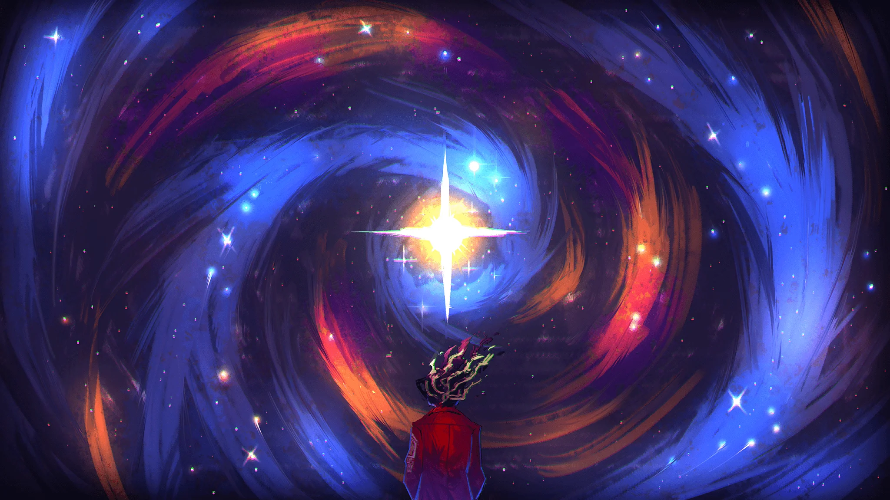

Sobre Limbus
Combate básico
En Limbus Company, las batallas son muy variadas porque existen varios tipos de daño y efectos. Cada tipo de daño tiene sus propias características y puede afectar a los enemigos de formas diferentes. Por eso, es importante entender cómo funcionan estos tipos de daño para comprender bien cómo se desarrollan los combates en el juego.
La mecánica principal para pelear utiliza habilidades. Cada habilidad tiene monedas positivas o negativas que pueden aumentar o disminuir el poder. Cuando dos personajes chocan sus habilidades, el que tenga mayor poder gana. El resultado se determina mediante el poder base y el valor de las monedas.
Para que una moneda tenga más posibilidades de resultar positiva existe una estadística conocida como Sanity (cordura), que afecta de forma positiva o negativa a las monedas. A través de las habilidades también se consiguen puntos de pecado. Cada habilidad está asociada a un pecado: Soberbia, Lujuria, Ira, Gula, Envidia, Avaricia y Pereza.
Tipos de daño

Punzada

Contundente
Pecados
Sin Affinity
Los pecados son un recurso muy importante en el juego, ya que se utilizan para activar algunas definitivas (ultis) y también pueden influir en el daño que producen determinadas habilidades.